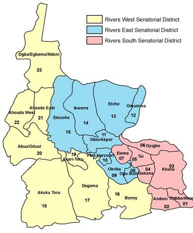

Nigeria officially the Federal Republic of Nigeria, is a country in West Africa, bordering Niger in the north, Chad in the northeast, Cameroon in the east, and Benin in the west. Its southern coast is on the Gulf of Guinea in the Atlantic Ocean. The federation comprises 36 states and 1 Federal Capital Territory, where the capital, Abuja, is located. The constitution defines Nigeria as a democratic secular state. Nigeria has been home to a number of ancient and indigenous kingdoms and states over the millennia. The modern state originated from British colonial rule beginning in the 19th century, and took its present territorial shape with the merging of the Southern Nigeria Protectorate and Northern Nigeria Protectorate in 1914 by Lord Fredrick Lugard. The British set up administrative and legal structures while practicing indirect rule through traditional chiefdoms, Nigeria became a formally independent federation on October 1, 1960. It experienced a civil war from 1967 to 1970. It thereafter alternated between democratically elected civilian governments and military dictatorships until it achieved a stable democracy in 1999, with the 2011 presidential election considered the first to be reasonably free and fair. Nigeria is often referred to as the "Giant of African Countries", owing to its large population and economy. With 206 million inhabitants, Nigeria is the most populous country in Africa and the seventh most populous country in the world. Nigeria has the third-largest youth population in the world, after India and China, with more than 90 million of its population under the age of eighteen. Nigeria is the world's 24th largest economy according to the list by the IMF (2020 estimates), worth more than $500 billion and $1 trillion in terms of nominal GDP and purchasing power parity, respectively. The 2013 debt-to-GDP ratio was 11 percent. Nigeria is viewed as a multinational state as it is inhabited by over 250 ethnic groups, of which the three largest are the Hausa, Igbo and Yoruba; these ethnic groups speak over 500 distinct languages and are identified with a wide variety of cultures. The official language of Nigeria is English, chosen to facilitate linguistic unity at the national level. Nigeria is divided roughly in half between Christians, who live mostly in the southern part of the country, and Muslims, who live mostly in the north. A minority of the population practice religions indigenous to Nigeria, such as those native to the Igbo and Yoruba ethnicities. Nigeria is considered to be an emerging market by the World Bank; it has been identified as a regional power on the African continent, a middle power in international affairs, and has also been identified as an emerging global power. However, its Human Development Index ranks 158th in the world. Nigeria is a member of the MINT group of countries, which are widely seen as the globe's next "BRIC-like" economies. It is also listed among the "Next Eleven" economies set to become among the biggest in the world. Nigeria is a founding member of the African Union and a member of many other international organizations, including the United Nations, the Commonwealth of Nations and OPEC. To read more about Nigeria click here!
Rivers State, also known simply as Rivers, is one of the 36 states of Nigeria. According to census data released in 2006, the state has a population of 5,198,716, making it the sixth-most populous state in the country. Its capital and largest city, Port Harcourt, is economically significant as the centre of Nigeria's oil industry. Rivers State is bounded on the South by the Atlantic Ocean, to the North by Imo, Abia and Anambra States, to the East by Akwa Ibom State, and to the West by Bayelsa and Delta states. It is home of many ethnic groups:Ikwerre people, Ikwerre Subgroups, Ijaw Subgroups,Ogoni people and many other ethnic groups. The people from Rivers State are known as "Riverians". The inland part of the state consists of tropical rainforest; towards the coast, the typical Niger Delta environment features many mangrove swamps.
The state is famous for its vast reserves of crude oil and natural gas. It was perhaps the richest and most important section of the African zone of the British Empire. Rivers State has two major oil refineries, two major seaports, airports, and various industrial estates spread across the land. More than 60% of the country’s output of crude oil is produced in the state. Other natural resources found within its boundaries are silica sand, glass sand and clay.
Prior to the discovery of oil in commercial quantity in 1951, Agriculture was the primary occupation of the people of Rivers State. Around the 19th century when the industrial revolution reached its peak in England, the area was then referred to as Oil Rivers Protectorate, this was due to its abundant palm oil and kernel which basically constituted the main revenue source of the country. In a sample survey carried out by the Federal Ministry of Agriculture and Natural Resources, about 40% of the rural inhabitants were committed to farming in 1983. Rivers State is one of the leading states in the production of yam, cassava, cocoyam, maize, rice and beans. About 39% (760,000 hectares) of the state's total land mass, particularly in the upland area, is suitable for cultivation. Major cash crops produced are oil palm products, rubber, coconut, raffia palm and jute. Other crops grown for food include vegetables, melon, pineapples, mango, pepper, banana and plantain. The fishing industry is an important sector in Rivers State. Besides being lucrative, fishing is also a favourite past time activity. There are approximately 270 species of fish existing; with many artisanal fishermen in the riverine areas. The state provides valuable seafood such as crabs, oysters, shrimps and sea snails among others. Vertebrates like birds, mammals and reptiles are also found in the region
Rivers State, the treasure base of the nation has its capital in the garden city of Port Harcourt. Carved out of the old Eastern Region in 1967, River State is bounded on the South by the Atlantic Ocean, to the North by Anambra, Imo and Abia States, to the East by AkwaIbom State and to the West by Bayelsa and Delta States. Rivers State is so named because of its many rivers, mangrove swamps, river delta environmental features and its tropical rainforests. It has 23 local governments with a population of about three million people that included the Abua, Andoni, Ekpeye, Engenni, Etche, lbani ,lkwerre, Kalabari, Ndoni, Okrika, and Ogoni among other ethnic groups. Pidgin English is the most spoken language in the state. Rivers State has many beautiful sites to behold. Below are some of them;

Abonnema (originally known as Nyemoni, which means "covet your own" in the Kalabari dialect of the Ijaw languages group) is a larger town in the Kalabari Kingdom that was founded in 1882. It was discovered by an expedition of a host of chiefs from the Kalabari town (Elem Kalabari). These include Chief Young Briggs (a Kalabari warrior whose original name is Chief Inikeiroari Iso-owu Briggs) in Nigeria. Other warriors like Chief Ekine Manuel, Chief Otaji, Chief Owukori Manuel, Chief Jack, Chief Young-Jack, Chief Boy Whyte, Chief Black Duke, with many others following behind him with their people, and together they made the town of Abonnema a reality. The town is today one of three major towns in Kalabari, others being Bakana founded in 1880 and Buguma in 1884. The late Chief Alaye Fubara-Manuel had written a poem entitled "Nyemoni" to showcase the legacy of the community.
There are four major family compounds that make up the town namely Manuel (Owukori), Briggs (Oruwari), Georgewill (Otagi) and Jack (Iju). These family compounds are headed by head chiefs and the town headed by the head chief of the Manuel family via a system of Primus inter pares. Since its founding in 1882, Abonnema has been headed by a head chief from the Manuel (Owukori) house and the Amayanabo of Abonnema has come from the direct descendants of Chief Bob-Manuel who was once described by Mary Henrietta Kingsley (1862-1900 ) in her book West African Studies as "another chief of no mean capacity is Bob Manuel, of Abonema, exceedingly neat, almost a dandy in appearance, a very shrewd trader, clear and concise in his speech, honourable in all his dealings, of a very reserved temperament." Today, Abonnema's Amayanabo is Chief Disreal Gbobo Bob-Manuel (Owukori IX) a nephew of King Morgan Opuarudokubo Bob-Manuel (Owukori VIII), who died in January 2011. The Amayanabo under kalabari custom is the head of Council of Chiefs of the town and is the father of the town
Abonnema grew to be a flourishing major Nigerian seaport during the colonial era, and was host to many European companies and the Royal Niger, company which changed name to UAC. Abonnema is located on an island. Abonnema is the headquarters of Akuku-Toru Local Government Area of Rivers State in Nigeria. Below are some pictures of Abonnema
To go back to the home page click here!